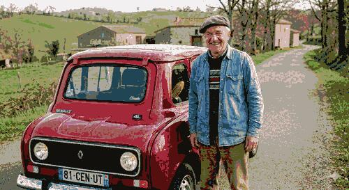

This site is a personal scrapbook — a place to put things down.
Notes, recipes, half-formed ideas, project sketches, reading lists. Some pages are finished. Most are not. That is fine. Built by hand. Pure HTML and CSS 4.0, lovingly over-engineered in places, blissfully under-engineered in others.
Claude-Code helps write and maintain this site — An odd collaboration: I type the ideas, it types the tags.
grow slowly, in no particular order -- https://indieweb.org/digital_garden —